01 — Battle simulation
02 — UI framework
03 — Navigation & formations
04 — Settlement & economy
05 — Overworld
01 — shipped as a standalone plugin
Battle simulation at scale
- Architected the soldier simulation in C++ on Mass Entity, pairing every entity with a light actor that renders through baked vertex animation.
- Sustained 4,000 individually simulated soldiers in a single battle, with per instance LOD tiers keeping crowd rendering affordable.
- Built the per soldier animation state machine on plain C++ state objects instead of UObjects, one instance per state type shared across all 4,000, so a state change allocates nothing and adds no garbage collection work.
- Built a GAS style ability system for squads covering 17 combat and traversal abilities, where a player order takes over from whatever the squad chose and the interrupted ability resumes once that order finishes.
- Shipped it as a standalone C++ plugin with its own UnrealBuildTool module, Blueprint exposed and independently testable. Retained as reusable in house technology.
- Profiled with Unreal Insights, including a World Partition leak that kept battle cell worlds alive after the return to the campaign map.
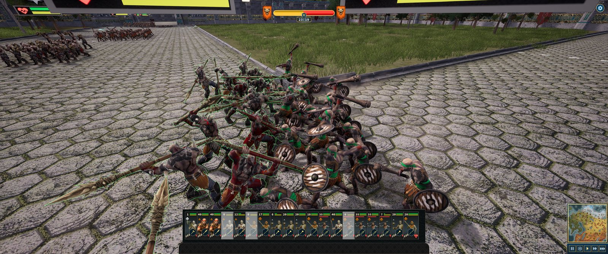
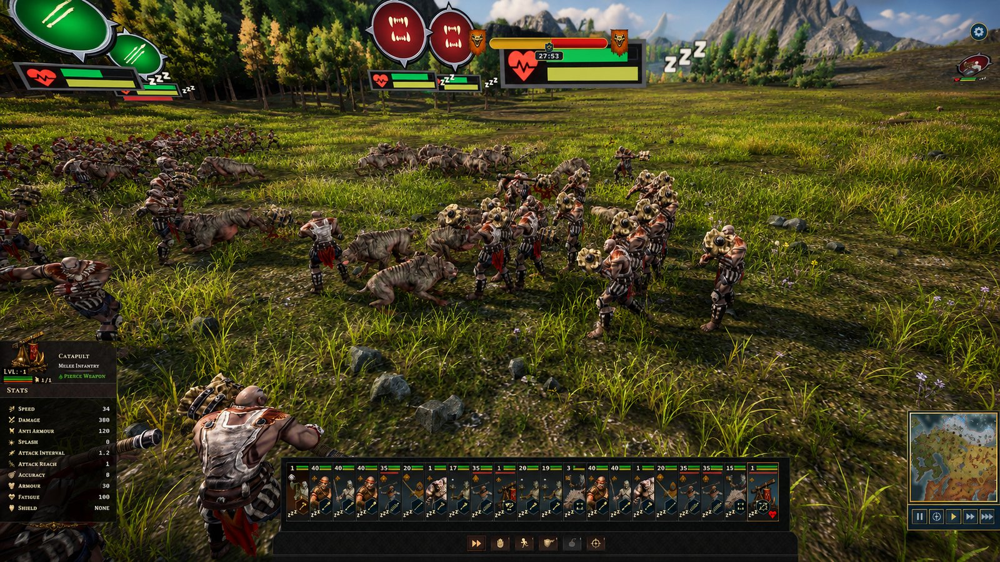
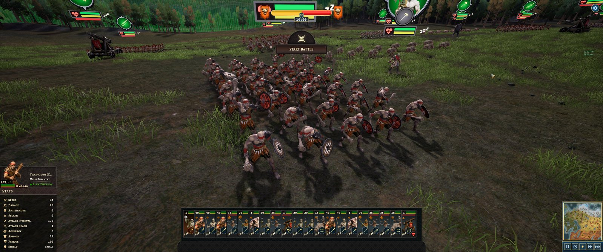
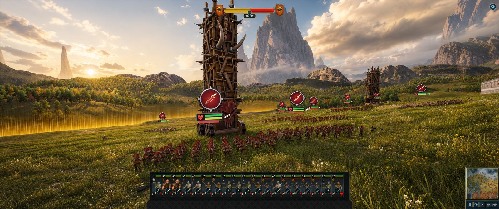
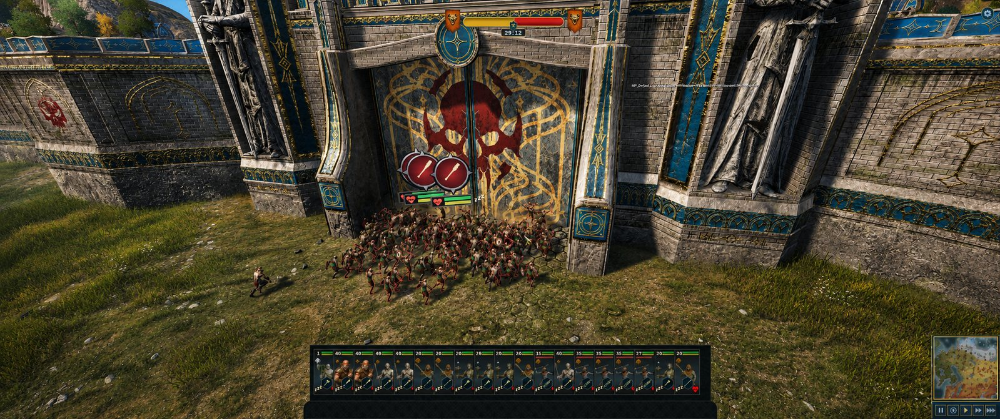
02 — a second standalone plugin
Data-driven UI framework
- Built a dynamic MVVM UI framework and shipped it as a second standalone C++ plugin with its own build module.
- Gameplay writes named fields on shared data models. A binding layer notifies whichever widgets subscribed to those fields. Neither side holds a reference to the other.
- Designers wire panels up in the editor, so adding a screen touches no gameplay code.
- Used across the whole project: battle HUD, diplomacy, character sheets, settlement management and the event screens.
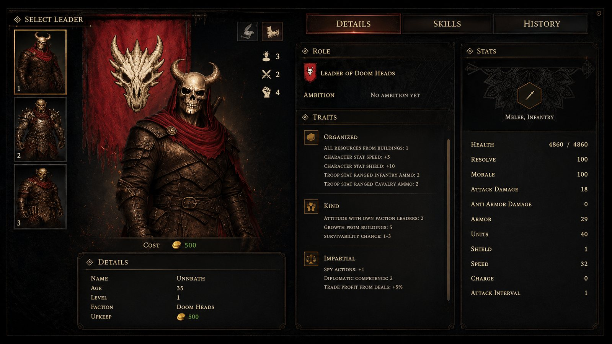
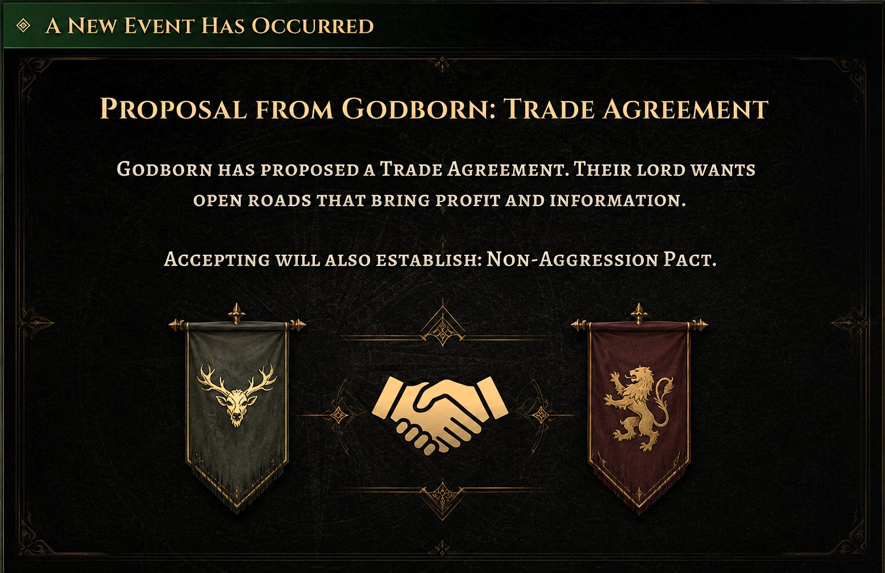
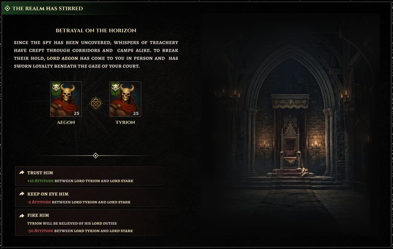
04 — built early in the project
Settlement designer & economy
- Built a settlement designer: grid snapped building placement inside a stronghold.
- Stronghold style wall building, where each piece picks its own form from what it connects to: straight runs, corners, ends and diagonals.
- A production chain economy underneath it, raw goods to intermediate to finished, each stage a building with inputs, outputs and throughput.
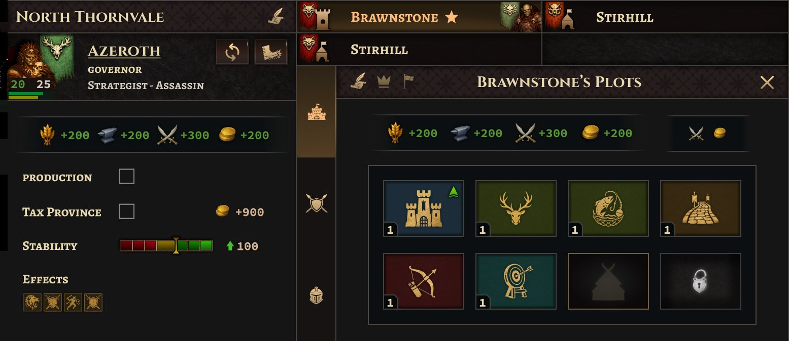
05 — the other half of what I lead
Overworld
- The campaign layer: armies raised, moved and supplied, provinces managed, and the decision to fight taken before any battle system runs.
- Province management, troop rosters and fog of war.
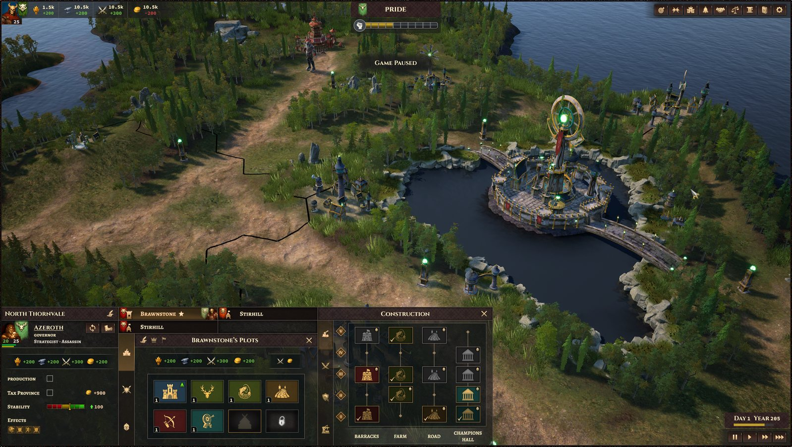
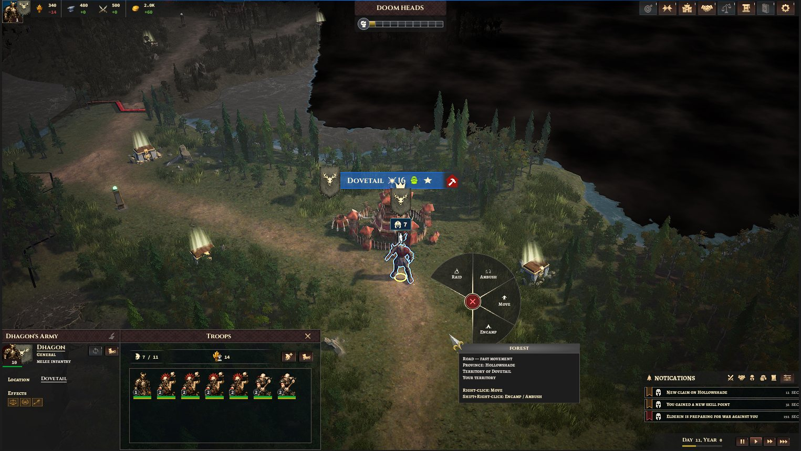
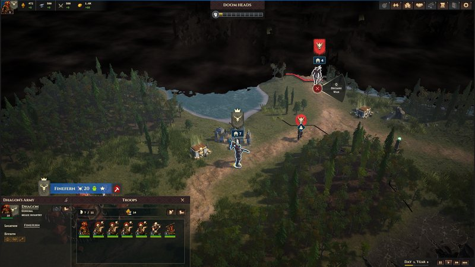